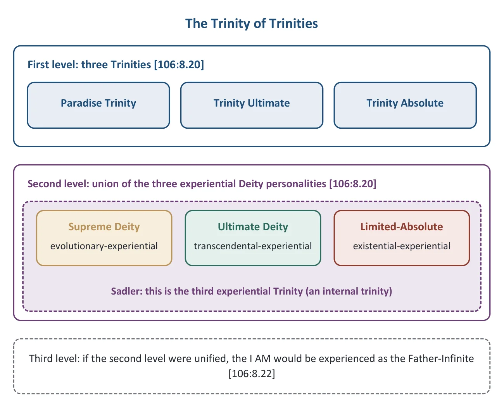

La troisième Trinité expérientielle
Original : Annexe XXIV, La troisième Trinité expérientielle (pp. 485–494)
DANS CE CHAPITRE
Sadler traite le deuxième niveau de la Trinité des Trinités comme une véritable trinité à part entière, qu’il nomme la troisième Trinité expérientielle. Ses trois membres sont le Suprême, l’Ultime et l’Absolu-Limité ; ce dernier est la présence de déité de Dieu l’Absolu telle qu’elle apparaitra par trinitisation. Si la Trinité du Paradis fut la première de toutes les trinités, celle-ci est la dernière. Elle peut être formée, mais elle ne peut jamais être pleinement unifiée, car l’infinité ne peut être épuisée.
1. La première Trinité et la dernière (orig., pp. 485–486)
Chaque fois que Sadler tourne sa pensée vers l’avenir lointain, il aime tendre le passé lointain comme un miroir. Examiner de près les causes absolues donne, croit-il, une vague esquisse de ce que pourraient être les évènements proches de la destinée absolue. Dans cette annexe, il emploie une fois de plus la même démarche, cette fois pour examiner la Trinité des Trinités et surtout son deuxième niveau.
Il y a longtemps, dans l’éternité passée, le Père Universel s’est joint au Fils Éternel pour trinitiser l’Esprit Infini et pour éterniser l’univers central. Avec l’apparition de la troisième personne, le cycle existentiel de la personnalisation de la Déité fut achevé, et entre les trois s’établit l’interdépendance décisive dont parle le Livre d’Urantia.
Et avec la personnalisation finale de la Déité coexistante — l’Acteur Conjoint — apparait l’interdépendance trinitaire critique des trois personnalités divines relative au fonctionnement total de la Déité dans l’absolu.10:3.7
Sadler s’attend à ce qu’un schéma de même forme se reproduise dans l’avenir lointain. En s’appuyant sur un maitre univers achevé, Dieu le Suprême et Dieu l’Ultime trinitiseraient ensemble Dieu l’Absolu et ouvriraient la zone intérieure du Cosmos Infini. Un cycle de personnalisation de la Déité expérientielle commencerait alors, et une interdépendance trinitaire naitrait de nouveau, cette fois entre trois Déités expérientielles.
Les deux évènements se ressemblent, mais ils vont en sens opposés. Le premier va du Père seul au Père et au Fils, puis aux trois, Père, Fils et Esprit ; Sadler le qualifie d’« intensificateur », un approfondissement vers l’intérieur. Le second va du Suprême au Suprême et à l’Ultime, puis à un Absolu contenu dans des limites ; celui-ci, il le qualifie d’« extensificateur », un élargissement vers l’extérieur. Il y a aussi une différence fondamentale. Le Fils tire son origine du Père, alors que l’Ultime ne tire pas directement son origine du Suprême.

2. La Trinité des Trinités : son deuxième niveau (orig., pp. 486–487)
Selon le Livre d’Urantia, la Trinité des Trinités a un premier niveau constitué de trois trinités (celle du Paradis, l’Ultime et l’Absolue), tandis que le deuxième niveau est l’union des trois personnalités de Déité expérientielle [106:8.20]. Sadler identifie l’occupant du troisième siège de ce deuxième niveau comme la présence de déité de Dieu l’Absolu, apparaissant par trinitisation. Quand les trois Déités expérientielles se réunissent, un nouveau système émerge, et dans cette émergence il voit la formation factuelle de la troisième Trinité expérientielle. Il fonde cette idée sur une question que pose la révélation elle-même.
si le deuxième niveau de la Trinité des Trinités pouvait jamais atteindre une unité trinitaire, qu’arriverait-il, alors, comme conséquence d’une telle unité de déité ?106:8.22
Dans une annexe précédente (XIX), Sadler a proposé que toute trinité expérientielle passe par trois stades : la réalité qualifiée, la formation factuelle et la réalité unifiée. Appliqué au deuxième niveau, le schéma se lit ainsi. Ce niveau est une réalité qualifiée depuis l’ouverture du deuxième âge de l’univers, comme en témoigne Majeston, actualisé sur ce niveau. Une fois Dieu l’Absolu trinitisé, il peut être factuellement formé à tout moment. Pourtant, il n’atteint jamais le troisième stade, celui de l’unification, car l’Absolu-Limité ne peut épuiser l’infinité.
Semblable aux autres trinités, et pourtant différente
Sadler souligne qu’il n’y a pas deux trinités semblables. La troisième Trinité expérientielle ressemble à la Trinité du Paradis parce qu’elle est formée par une trinitisation de la Déité, et elle ressemble à la Trinité Absolue parce qu’elle ne peut jamais être entièrement unifiée. Elle diffère cependant de toutes les autres trinités en ce qu’elle est la seule à se trouver à l’intérieur d’une trinité plus vaste : c’est une trinité interne.
3. Les membres de la Trinité finale (orig., pp. 488–490)
Sadler compte trois membres : la Déité Suprême fonctionnant comme coabsolue (ou coinfinie), la Déité Ultime de même statut, et la présence de déité de l’Absolu-Limité trinitisée par le Suprême-Ultime. Nommer le troisième membre est malaisé. « Dieu l’Absolu » évoque une personne, alors que l’Absolu de Déité est un potentiel purement existentiel. Il distingue donc ce membre de l’Absolu qui ne connait pas de limites et l’appelle l’Absolu-Limité.
Le Livre d’Urantia nomme trois possibilités superfinies pour la manifestation de l’Être Suprême dans l’univers. La troisième est celle-ci :
3. La participation co-infinie dans la Trinité des Trinités, mais nous ne concevons pas d’une manière satisfaisante ce que cela signifie en réalité.117:7.11
De cette troisième possibilité, Sadler déduit que l’Être Suprême continue de croitre même après que sa personnalité est achevée. Cette croissance n’est pas au-delà de la personnalité ; c’est une croissance qui vient après l’achèvement de la personnalisation du pouvoir. Il applique le même raisonnement à la Déité Ultime. Les deux Déités expérientielles participent à la projection de l’expérience sur un champ d’expression créative dépassant le maitre univers, et la révélation appelle coabsolus ceux qui prennent part à cette œuvre [106:0.7].
Le troisième membre est plus complexe. Sadler voit cette présence traverser trois phases. Au départ, c’est une présence initiale, pas plus grande que ce que le Suprême-Ultime a trinitisé. Ensuite, elle devient une présence croissante, qui grandit par une éternelle synthèse de pouvoir-personnalité. Enfin, si tout processus pouvait être achevé, ce serait une hypothétique présence finale unissant expérientiellement les trois Absolus en un seul. Cependant, comme le potentiel infini des trois Absolus n’est jamais épuisé, cette troisième phase n’arrive jamais.
4. Les fonctions de la Trinité finale (orig., pp. 490–491)
Former une trinité n’efface pas ses membres. Le Père et le Fils, bien qu’ils soient devenus comme un, conservent leur identité propre, et la Trinité du Paradis ne masque ni l’individualité des trois personnes ni leur accessibilité. Ce qui change, c’est le mode de fonctionnement de la Déité.
on ne peut discerner que le Père soit absolu comme Déité totale, sauf dans la Trinité du Paradis.10:3.8
Sadler s’attend à la même chose dans l’avenir. Dieu le Suprême, Dieu l’Ultime et Dieu l’Absolu pourraient chacun être contactés individuellement, mais, dans leur relation avec l’univers total, ils n’agiraient qu’en tant que trinité. Il soupçonne aussi que, de même que Havona fut un univers d’origine trinitaire qui apparut en même temps que la première Trinité, la zone intérieure du Cosmos Infini pourrait être un univers qui apparaitra en même temps que la dernière. Cette trinité croit sans fin et progresse sans cesse vers l’unité, sans jamais être achevée. C’est précisément parce qu’elle reste inachevée que l’aventure de l’univers et de ses citoyens ne se heurte jamais à un mur final.
S’approcher de l’Absolu Universel ou l’atteindre
La révélation décrit l’Absolu Universel comme susceptible d’une approche expérientielle-existentielle [0:11.14]. Sadler fait remarquer que s’approcher n’est pas arriver. Puisque l’incompréhensibilité de l’Absolu Universel s’accroit à mesure que l’univers s’étend [10:8.8], l’expansion pourrait devancer l’approche. (L’original cite ce passage comme 0:1.14.)
5. La dernière tentative d’unification de la Déité expérientielle (orig., pp. 491–494)
Au Paradis et dans l’univers central, l’unité de la Déité est un fait d’existence. Dans tous les univers évoluants du temps et de l’espace, l’unité de la Déité est un accomplissement.56:5.4
La Déité existentielle est éternellement une dans la Trinité du Paradis. L’unité de la Déité expérientielle, en revanche, dépend des efforts de chaque créateur, de chaque Déité et de chaque trinité postérieurs à Havona. Sadler ordonne ces efforts en une suite de tentatives sur trois niveaux.
| Niveau | Arène et âge | Déité et trinité qui émergent | Résultat |
|---|---|---|---|
| Premier (fini) | Grand univers, deuxième âge | Être Suprême ; première Trinité expérientielle | Émerge quand l’activité du niveau prend fin |
| Deuxième (subabsolu) | Maitre univers, du deuxième au sixième âge | L’Ultime ; deuxième Trinité expérientielle | Émerge quand l’activité prend fin ; la Trinité Absolue ne peut être unifiée |
| Troisième (absolu) | Cosmos Infini, âge final | Dieu l’Absolu ; troisième Trinité expérientielle | Émerge quand l’activité commence ; jamais achevé |
Les deux premiers niveaux sont ceux que la révélation appelle « deux niveaux subabsolus et évolutionnaires » [0:12.1]. Sur ces niveaux, une Déité et une trinité émergent quand l’œuvre du niveau est accomplie. Le troisième niveau, en revanche, n’est nullement un niveau subabsolu, mais le niveau absolu originel à partir duquel les deux autres ont été projetés, et ici l’ordre est inversé. Comme ni l’infinité ni l’éternité ne peuvent être épuisées, il n’y a pas de moment où l’œuvre est achevée ; la nouvelle Déité et la nouvelle trinité apparaissent donc quand l’œuvre commence. Sadler y trouve une ressemblance avec l’ouverture du premier âge de l’univers, lorsque la Déité se personnalisa de même au commencement de l’âge et non à sa fin.
Les trois membres du deuxième niveau peuvent ainsi être décrits comme la Déité évolutionnaire-expérientielle (le Suprême), la Déité transcendantale-expérientielle (l’Ultime) et la Déité existentielle-expérientielle (l’Absolu-Limité). Sadler voit dans cette trinité unifiante mais jamais unifiée un effort final pour rassembler, par des moyens expérientiels, ce que l’Infini a jadis divisé par des moyens existentiels dans l’éternité. Ce que vise cet effort, ajoute-t-il, n’est pas une nouvelle Déité, mais la Déité originelle : une tentative expérientielle d’entrer dans l’Infini.

Points clés
- Sadler considère le deuxième niveau de la Trinité des Trinités comme une véritable trinité : la troisième Trinité expérientielle, ou Trinité finale.
- Ses trois membres sont le Suprême, l’Ultime et l’Absolu-Limité ; ce dernier est la présence de déité de Dieu l’Absolu une fois qu’il a été trinitisé.
- La trinitisation Père-Fils intensifie la Déité vers l’intérieur ; la trinitisation Suprême-Ultime étend la Déité vers l’extérieur.
- Cette trinité peut être formée mais jamais unifiée, car l’infinité quantitative ne peut jamais être épuisée.
- Au sein de la trinité, chaque membre conserve son individualité ; seule la fonction de Déité envers l’univers total est unie en tant que trinité.
- L’unification de la Déité expérientielle est tentée sur les niveaux fini, subabsolu et absolu, et, sur le troisième niveau, la Déité et la trinité apparaissent au commencement de l’activité.